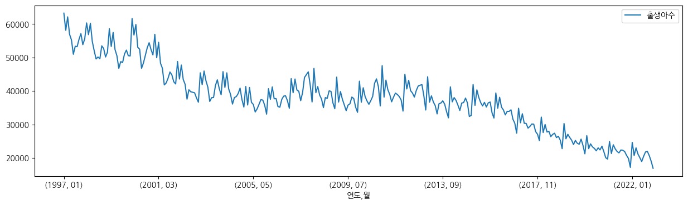
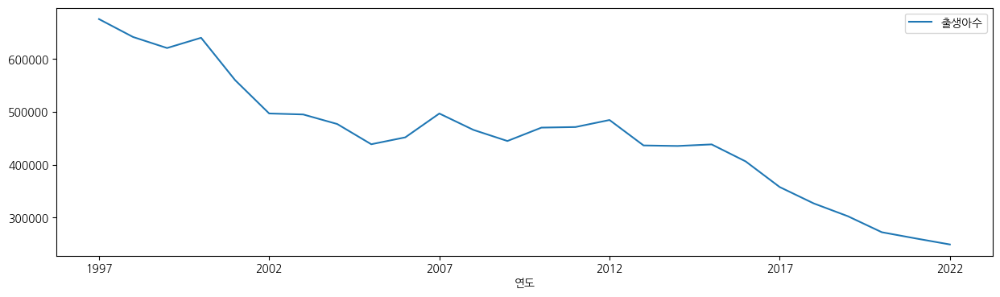
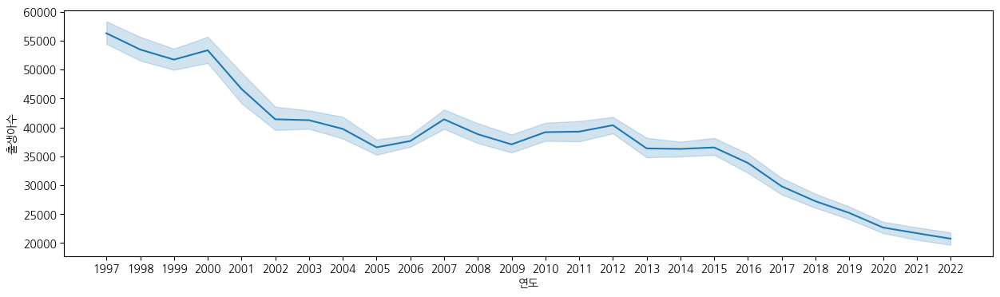

import pandas as pd
import numpy as np
import seaborn as sns
import matplotlib.pyplot as plt
import koreanize_matplotlib추천 시스템 스터디 실습 예제 1
데이터 읽어오기
df = pd.read_csv("data/출생아수(2022).csv")
df.info()<class 'pandas.core.frame.DataFrame'>
RangeIndex: 19 entries, 0 to 18
Columns: 937 entries, 시군구별 to 2022.12.2
dtypes: object(937)
memory usage: 139.2+ KBinfo에 대한 이해
- 행, row, 종속변인
- 열, col, 독립변인, 특징, feat
데이터 확인
df.head()| 시군구별 | 1997.01 | 1997.01.1 | 1997.01.2 | 1997.02 | 1997.02.1 | 1997.02.2 | 1997.03 | 1997.03.1 | 1997.03.2 | ... | 2022.09.2 | 2022.10 | 2022.10.1 | 2022.10.2 | 2022.11 | 2022.11.1 | 2022.11.2 | 2022.12 | 2022.12.1 | 2022.12.2 | |
|---|---|---|---|---|---|---|---|---|---|---|---|---|---|---|---|---|---|---|---|---|---|
| 0 | 시군구별 | 계 (명) | 남자 (명) | 여자 (명) | 계 (명) | 남자 (명) | 여자 (명) | 계 (명) | 남자 (명) | 여자 (명) | ... | 여자 (명) | 계 (명) | 남자 (명) | 여자 (명) | 계 (명) | 남자 (명) | 여자 (명) | 계 (명) | 남자 (명) | 여자 (명) |
| 1 | 전국 | 63268 | 33266 | 30002 | 58144 | 30086 | 28058 | 62160 | 32333 | 29827 | ... | 10715 | 20646 | 10530 | 10116 | 18981 | 9737 | 9244 | 16896 | 8684 | 8212 |
| 2 | 서울특별시 | 13205 | 6886 | 6319 | 12239 | 6224 | 6015 | 13358 | 6947 | 6411 | ... | 1831 | 3612 | 1794 | 1818 | 3230 | 1678 | 1552 | 2901 | 1472 | 1429 |
| 3 | 부산광역시 | 4201 | 2260 | 1941 | 3910 | 2104 | 1806 | 4304 | 2234 | 2070 | ... | 575 | 1166 | 602 | 564 | 977 | 479 | 498 | 957 | 528 | 429 |
| 4 | 대구광역시 | 3345 | 1764 | 1581 | 2994 | 1608 | 1386 | 3337 | 1815 | 1522 | ... | 416 | 848 | 428 | 420 | 802 | 406 | 396 | 663 | 334 | 329 |
5 rows × 937 columns
데이터 변형
- https://pandas.pydata.org/docs/reference/api/pandas.melt.html
- https://pandas.pydata.org/pandas-docs/stable/reference/api/pandas.DataFrame.pivot.html
- https://pandas.pydata.org/docs/reference/api/pandas.merge.html
- https://pandas.pydata.org/docs/reference/api/pandas.concat.html
df = df.melt(id_vars="시군구별")
df.head()| 시군구별 | variable | value | |
|---|---|---|---|
| 0 | 시군구별 | 1997.01 | 계 (명) |
| 1 | 전국 | 1997.01 | 63268 |
| 2 | 서울특별시 | 1997.01 | 13205 |
| 3 | 부산광역시 | 1997.01 | 4201 |
| 4 | 대구광역시 | 1997.01 | 3345 |
# https://pandas.pydata.org/pandas-docs/stable/reference/api/pandas.Series.html#
df["시군구별"].unique()array(['시군구별', '전국', '서울특별시', '부산광역시', '대구광역시', '인천광역시', '광주광역시', '대전광역시',
'울산광역시', '세종특별자치시', '경기도', '강원도', '충청북도', '충청남도', '전라북도', '전라남도',
'경상북도', '경상남도', '제주특별자치도'], dtype=object)# https://pandas.pydata.org/docs/user_guide/indexing.html#boolean-indexing
df = df[df["시군구별"] != "시군구별"].copy()
df.shape(16848, 3)df["시군구별"].unique()array(['전국', '서울특별시', '부산광역시', '대구광역시', '인천광역시', '광주광역시', '대전광역시',
'울산광역시', '세종특별자치시', '경기도', '강원도', '충청북도', '충청남도', '전라북도', '전라남도',
'경상북도', '경상남도', '제주특별자치도'], dtype=object)df.head()| 시군구별 | variable | value | |
|---|---|---|---|
| 1 | 전국 | 1997.01 | 63268 |
| 2 | 서울특별시 | 1997.01 | 13205 |
| 3 | 부산광역시 | 1997.01 | 4201 |
| 4 | 대구광역시 | 1997.01 | 3345 |
| 5 | 인천광역시 | 1997.01 | 3646 |
# https://pandas.pydata.org/docs/reference/api/pandas.Series.str.split.html#pandas-series-str-split
df["연도"] = df["variable"].str.split(".", expand=True)[0]
df["월"] = df["variable"].str.split(".", expand=True)[1]
df["성별"] = df["variable"].str.split(".", expand=True)[2]
df.head()| 시군구별 | variable | value | 연도 | 월 | 성별 | |
|---|---|---|---|---|---|---|
| 1 | 전국 | 1997.01 | 63268 | 1997 | 01 | None |
| 2 | 서울특별시 | 1997.01 | 13205 | 1997 | 01 | None |
| 3 | 부산광역시 | 1997.01 | 4201 | 1997 | 01 | None |
| 4 | 대구광역시 | 1997.01 | 3345 | 1997 | 01 | None |
| 5 | 인천광역시 | 1997.01 | 3646 | 1997 | 01 | None |
df.tail()| 시군구별 | variable | value | 연도 | 월 | 성별 | |
|---|---|---|---|---|---|---|
| 17779 | 전라북도 | 2022.12.2 | 229 | 2022 | 12 | 2 |
| 17780 | 전라남도 | 2022.12.2 | 250 | 2022 | 12 | 2 |
| 17781 | 경상북도 | 2022.12.2 | 366 | 2022 | 12 | 2 |
| 17782 | 경상남도 | 2022.12.2 | 503 | 2022 | 12 | 2 |
| 17783 | 제주특별자치도 | 2022.12.2 | 121 | 2022 | 12 | 2 |
df["성별"].unique()array([None, '1', '2'], dtype=object)df["성별"].nunique()2df["성별"] = df["성별"].fillna("전체")
df["성별"].unique()array(['전체', '1', '2'], dtype=object)df["성별"] = df["성별"].replace("1", "남자").replace("2", "여자")
df["성별"].unique()array(['전체', '남자', '여자'], dtype=object)df["성별"].value_counts()성별
전체 5616
남자 5616
여자 5616
Name: count, dtype: int64df.head()| 시군구별 | variable | value | 연도 | 월 | 성별 | |
|---|---|---|---|---|---|---|
| 1 | 전국 | 1997.01 | 63268 | 1997 | 01 | 전체 |
| 2 | 서울특별시 | 1997.01 | 13205 | 1997 | 01 | 전체 |
| 3 | 부산광역시 | 1997.01 | 4201 | 1997 | 01 | 전체 |
| 4 | 대구광역시 | 1997.01 | 3345 | 1997 | 01 | 전체 |
| 5 | 인천광역시 | 1997.01 | 3646 | 1997 | 01 | 전체 |
df = df.rename(columns={"variable": "기간", "value": "출생아수"})
df.head()| 시군구별 | 기간 | 출생아수 | 연도 | 월 | 성별 | |
|---|---|---|---|---|---|---|
| 1 | 전국 | 1997.01 | 63268 | 1997 | 01 | 전체 |
| 2 | 서울특별시 | 1997.01 | 13205 | 1997 | 01 | 전체 |
| 3 | 부산광역시 | 1997.01 | 4201 | 1997 | 01 | 전체 |
| 4 | 대구광역시 | 1997.01 | 3345 | 1997 | 01 | 전체 |
| 5 | 인천광역시 | 1997.01 | 3646 | 1997 | 01 | 전체 |
df.info()<class 'pandas.core.frame.DataFrame'>
Index: 16848 entries, 1 to 17783
Data columns (total 6 columns):
# Column Non-Null Count Dtype
--- ------ -------------- -----
0 시군구별 16848 non-null object
1 기간 16848 non-null object
2 출생아수 16848 non-null object
3 연도 16848 non-null object
4 월 16848 non-null object
5 성별 16848 non-null object
dtypes: object(6)
memory usage: 921.4+ KB# https://pandas.pydata.org/docs/user_guide/missing_data.html#values-considered-missing
df["출생아수"] = df["출생아수"].replace("-", np.nan)
df["출생아수"] = df["출생아수"].astype(float)
df["출생아수"].describe()count 16308.000000
mean 2898.333579
std 6406.925280
min 30.000000
25% 589.000000
50% 980.000000
75% 1833.250000
max 63268.000000
Name: 출생아수, dtype: float64df_all = df[(df["시군구별"] == "전국") & (df["성별"] == "전체")]
df_all.head(2)| 시군구별 | 기간 | 출생아수 | 연도 | 월 | 성별 | |
|---|---|---|---|---|---|---|
| 1 | 전국 | 1997.01 | 63268.0 | 1997 | 01 | 전체 |
| 58 | 전국 | 1997.02 | 58144.0 | 1997 | 02 | 전체 |
df_all = df_all[["연도", "월", "출생아수"]].copy()
df_all.head()| 연도 | 월 | 출생아수 | |
|---|---|---|---|
| 1 | 1997 | 01 | 63268.0 |
| 58 | 1997 | 02 | 58144.0 |
| 115 | 1997 | 03 | 62160.0 |
| 172 | 1997 | 04 | 56949.0 |
| 229 | 1997 | 05 | 55270.0 |
df_all.set_index(["연도", "월"]).plot(figsize=(15, 4))
df_all.groupby("연도").sum().plot(figsize=(15, 4))
plt.figure(figsize=(15, 4))
sns.lineplot(data=df_all, x="연도", y="출생아수")